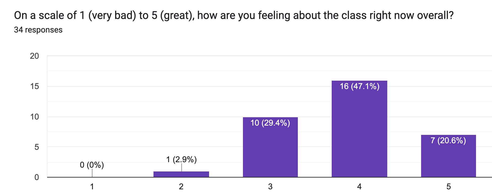
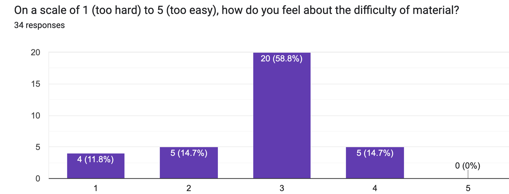

Mid-quarter check-in
Contents
Mid-quarter check-in#
For me, useful way to see how course is going.
For you, useful way to have input into future offerings of course.
Pt. 1: How are people doing in the course?#
Lab 1: average grade = \(96.6\%\) (median = \(100\%\)).
Lab 2: average grade = \(96.5\%\) (median = \(100\%\)).
Lab 3: average grade = \(88.5\%\) (median = \(100\%\)).
Lab 4: average grade = \(90.4\%\) (median = \(100\%\)).
Problem Set 1: average grade = \(93.4\%\) (median = \(100\%\)).
Summary: Quite well, for the most part!
If you’re struggling or feel lost, please reach out to either me or the TAs!
Pt. 2: Survey#
34 respondents (about ~30% response rate).
How do people feel about the course?#

How do people feel about the material?#

Other questions:#
Most (97.1%) said they’d recommend the course.
A majority (55%) said the pace was just right, with even distribution on either side (i.e., no bias towards “too fast” or “too slow”).
Most (64%) felt very positively about section, with another 27.3% feeling decent about it.
Pt. 3: Qualitative assessments#
Course length#
I think this class may need to be longer. So instead of being 50 min long, perhaps it can be an hr and 30 min long or something similar. Maybe instead of meeting 3 times a week for 50 min, we could meet 2 times a week for an hr and some odd minutes like 30, or even 2 hrs. I think if the class is structured this way, it could help with the pace of the class. This way we have enough time to address any questions on things that were unclear while being able to fully cover a topic.
Response: Good suggestion for future quarters––unfortunately class scheduling isn’t up to me, but I can mention this to the registrar.
Lab difficulty + timing#
i understand we are behind in lecture content, but there is always one section of the lab that I can’t do before/during my lab because we haven’t covered it yet, which is very frustrating and it makes me feel like I’m not really understanding the material enough even though I am up to date with lecture material. Also the worksheets are so hard why cant we have help?
Response (1): Totally fair––will make an effort to make sure lab material is better-timed with lecture material in future weeks. (E.g., Lab 6 will cover stuff from week 5, just “harder”).
Response (2): Re: difficulty, must strike balance.
I’m happy with how well students are doing so far.
But we’re also always available during office hours and over Piazza to offer guidance.
Focusing in class#
I noticed some people talk a lot during class so maybe…keeping the silence so others around could focus
Response: Also fair!
If you have a question, please ask it.
As a student, I know it’s sometimes hard to gauge volume––but talking can distract others (and me).
Positive feedback about flexibility#
I love the flexibility and time we have to do each assignment. The pace is perfect, love it.
thank you for podcasting. really good for flexibility as I can go back to specific parts of lecture when I need
Response: Good to know!